The pandal
A full Durga Puja pandal in the East Kolkata Wetlands, designed around the farming year, built by Bengal karigars, and open to the public across the festival.
Footage: Durga Puja Mahotsav 2025, IIT Kharagpur Research Park. This is the organisers' record, not the 2026 pandal.
Durga Puja 2026 · Kolkata · Founding partnerships open
On the seventh morning of Durga Puja, before the crowds arrive, priests carry a bundle of nine plants to the river and bathe it at first light. Banana, turmeric, pomegranate, wood apple, arum, colocasia, ashoka, jayanti and paddy. The bundle is wrapped in a red bordered sari and set beside Ganesha, and for the rest of the week Bengal worships it as the goddess herself. The paddy is Lakshmi. The turmeric is Durga.
Long before it became the largest public festival in India, this was a harvest rite, cultivators asking autumn for a good crop. That thread was never cut. It was only forgotten.
In 2026 we pick it up again. One pandal in the East Kolkata Wetlands, built around the women and men who grow the food, with a working integrated farm on the same ground that visitors walk through. This is the first year. The companies who come in now are the founding names on it.
This site takes no payment. The enquiry creates a file on your own device and sends nothing.
The festival
Durga Puja is the only Indian festival on the UNESCO list of Intangible Cultural Heritage, and it was listed not for the worship alone but for everything the city builds around it: the artistry, the craft economy, and the way an entire population comes out of doors for a week to look at what its neighbours have made.
At heart it is a homecoming. Durga returns to her father's house with her children, stays a few days, and is walked to the river. Bengal grieves a little every year when she goes. That is the emotional weather of the whole week, and it is why nobody here treats Puja as a holiday. It is a return.
It is also the largest open air exhibition in the world that nobody calls an exhibition. The sculptors of Kumartuli work through the monsoon. Pandals are commissioned like architecture, argued about like cinema, and queued for like concerts, with families walking from midnight until four in the morning to see the ones they have heard about.
A study led by Queen Mary University of London with the British Council, supported by IIT Kharagpur, valued the creative economy around the festival at ₹32,377 crore, roughly 2.58 per cent of West Bengal's annual GDP, generated in a single week.
The figure is not the interesting part. This is.
It is the only place in India where people queue, at night, in the rain, to get into something you have put your name on.
The organisers' record: Durga Puja Mahotsav 2025 at IIT Kharagpur Research Park.
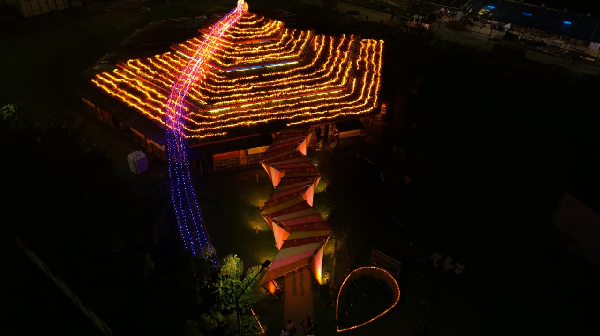
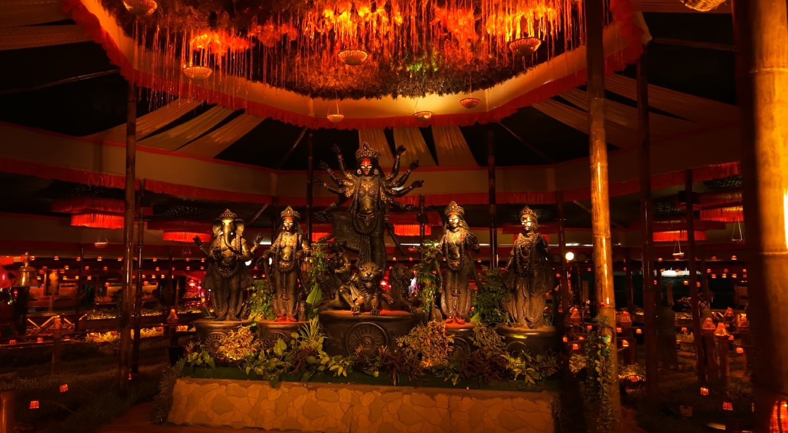
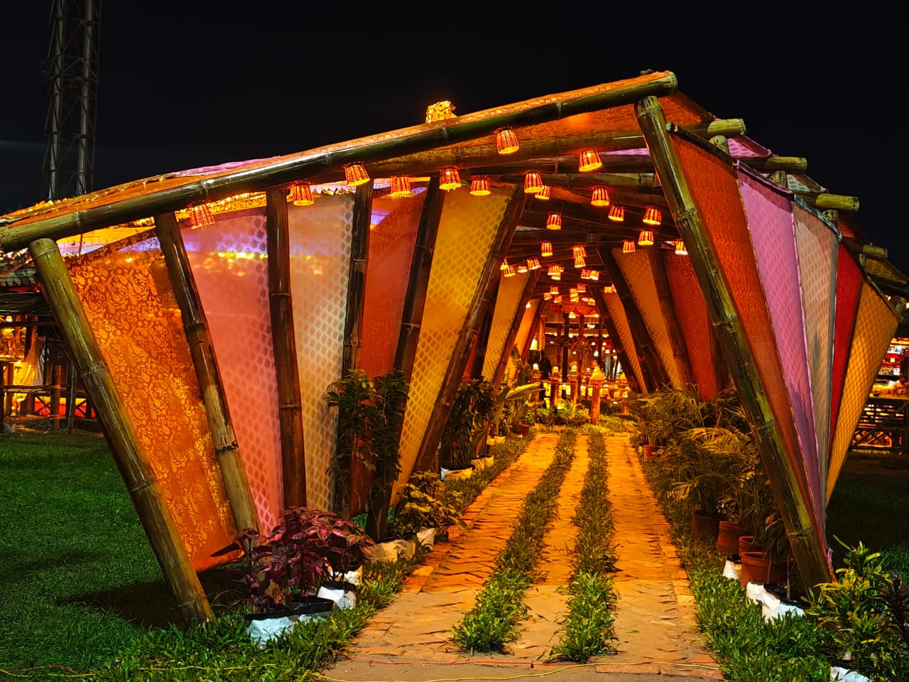
The idea
Bengal's pandals are arguments. Each year a handful of them say something the state then discusses for months, about migration, women's safety, the river or the climate.
Ours says something older and simpler.
The nine plants are already in the ritual. The paddy is already the goddess. What is missing is the person who put the paddy in the ground: the woman transplanting in ankle deep water in July, the man walking his pond bank at dawn, the family that decides in June what everyone eats in November.
So the pandal is built around their year. Their water, their soil, their tools, their calendar. Not a photograph of a farmer at the entrance. The whole structure.
And beside it, on the same ground, a farm that genuinely works: crop, pond, livestock and market held together on one holding, the way a small Bengal family really farms, where what one part throws away is what the next part needs. Nobody will read about integrated farming on a signboard. They will walk through it.
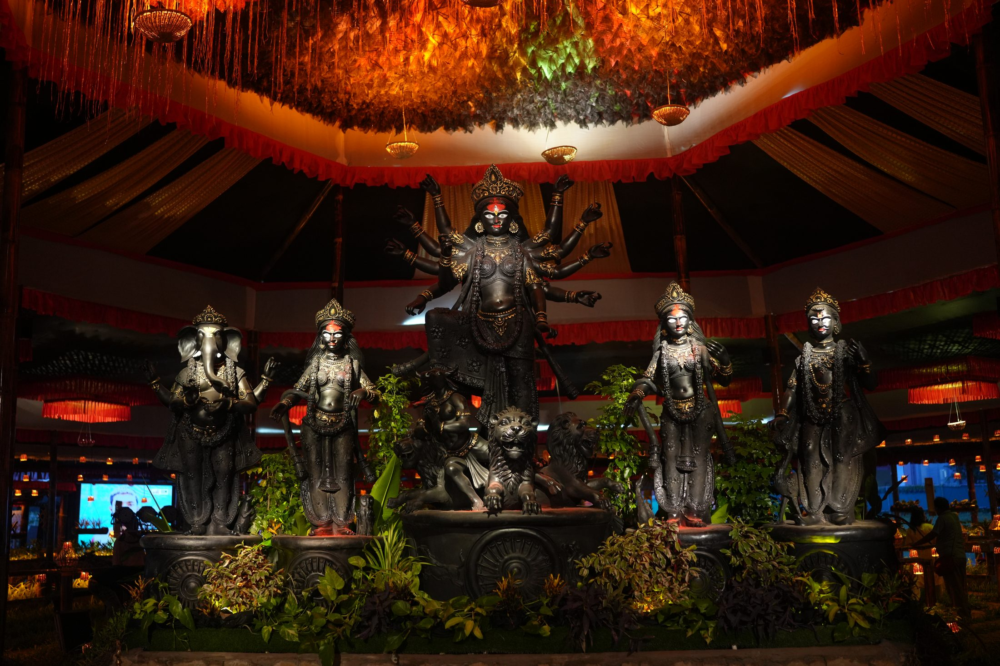
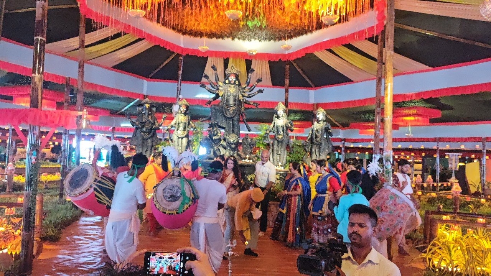
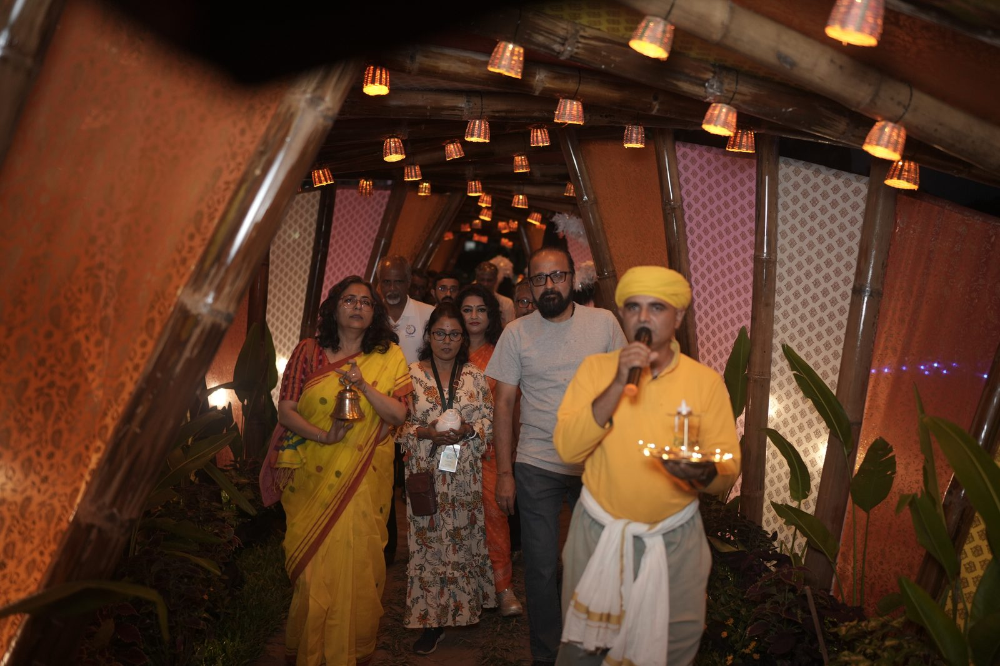
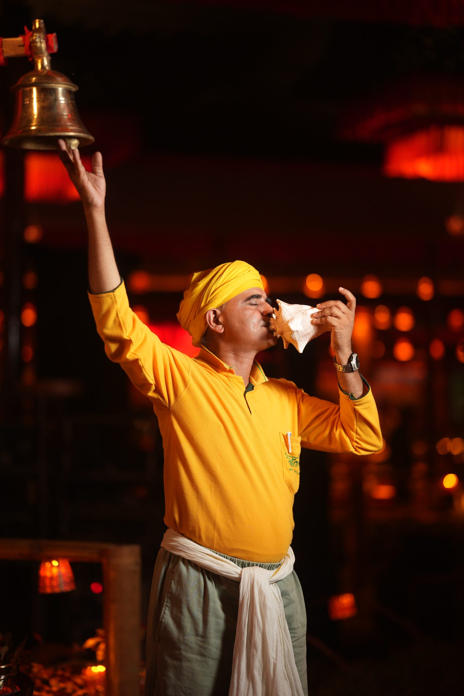
Photographs: Durga Puja Mahotsav 2025, IIT Kharagpur Research Park. The organisers' record, not the 2026 pandal.
What is being built
Five things exist by 16 October 2026, and every one of them is somewhere a partner can stand.
A full Durga Puja pandal in the East Kolkata Wetlands, designed around the farming year, built by Bengal karigars, and open to the public across the festival.
A working integrated farm on the same ground, with paddy, pond, livestock, vegetables, composting and water management arranged as one walkable cycle.
Defined spaces inside the farm where companies install and run their own equipment on a real smallholding, staffed by their own people, in front of growers.
Five days of aarti, dhaak, food, craft and farmer conversations on the ground, including growers from the wetlands themselves, who host this.
The whole build and the whole week, filmed and photographed properly, from the first bamboo to the immersion.
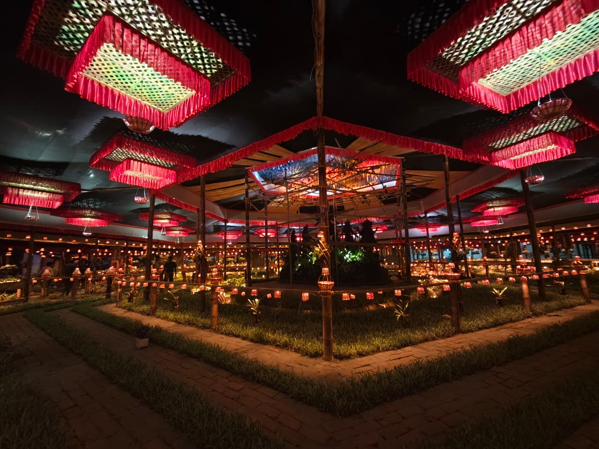
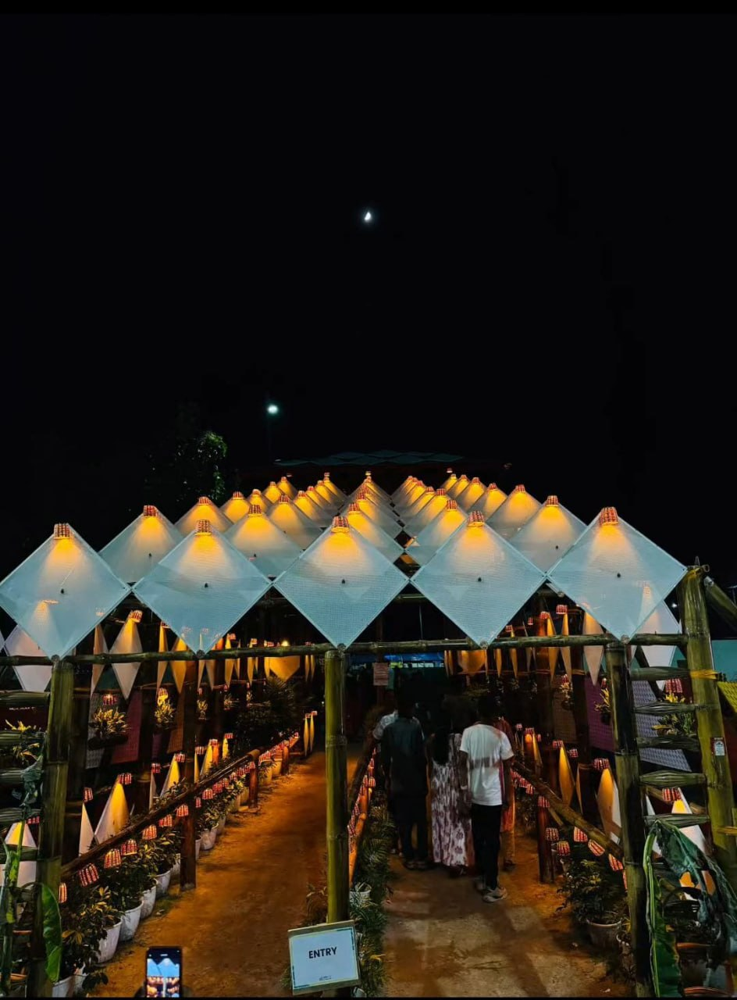
The 2026 farm and pandal at Munshir Bheri will be a new build. These photographs show the organisers' earlier work, not a rendering of what is promised.
That is the event.
It happens whether or not any single company joins, and it is what sponsorship pays for.
Who is behind it
The roles are separate and specific, so a partner knows exactly who is accountable.
Organiser
KarmYog conceives, builds and runs the Pujo. The ground, the pandal, the farm, the programme, the safety and the money all sit with KarmYog. Your agreement is with KarmYog and with nobody else. The Foundation also organised Durga Puja Mahotsav 2025 at the IIT Kharagpur Research Park.
Organisation Partner
Bharatiya Krishak Samaj is a farmers' organisation with a single preoccupation: the upliftment of the farmer. That is the entire reason this partnership exists, and it is why the Pujo carries their name.
No money moves between us. Bharatiya Krishak Samaj is not paid to lend its name and takes no share of sponsorship. It is not a sponsor, it does not hold the title position, and it is not a commercial party to anything on this page.
Why that should matter to you
The farming subject here is not a theme invented for a festival. The organisation that does this work every day of the year put its name to it before a single sponsor was approached. When your brand stands next to the farmer at this Pujo, it is standing next to something that was already true.
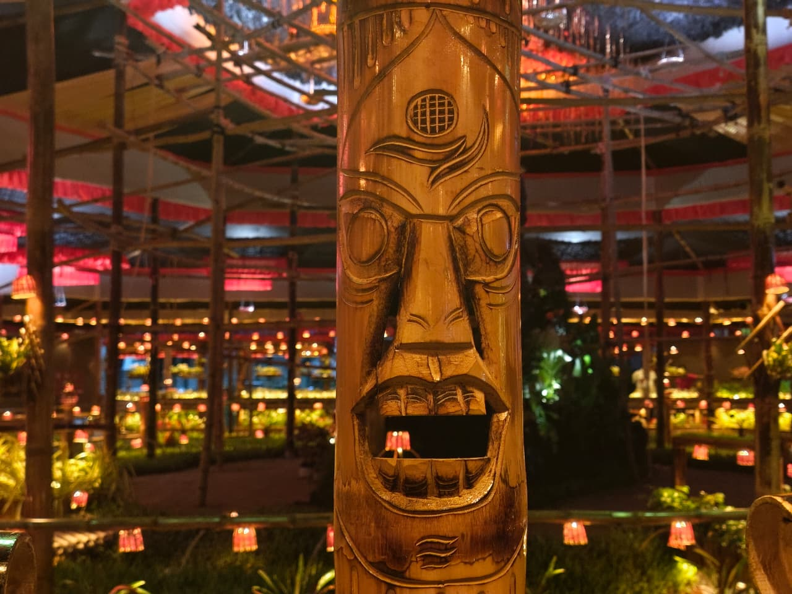
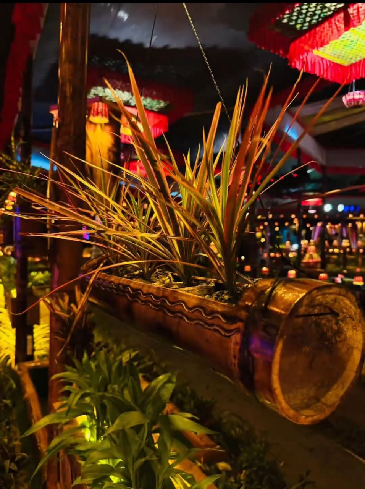
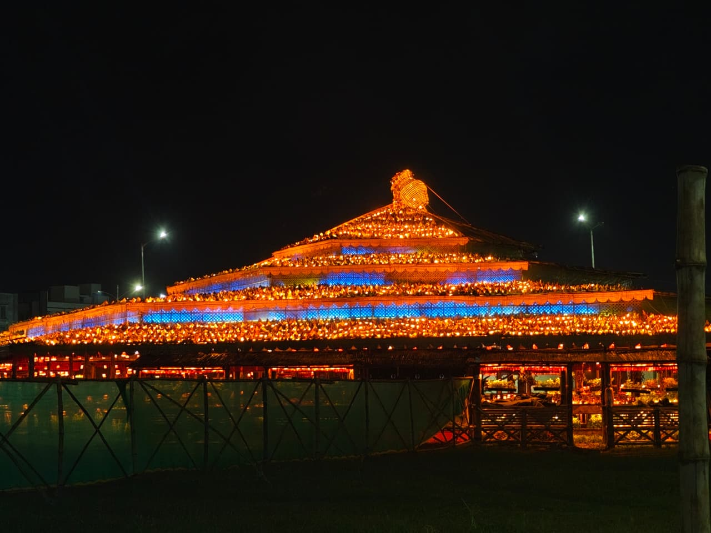
Why a company would want this
You already talk to farmers every day, in an app, on a call, at a centre or in a field. What you rarely get is somewhere thousands of people, including the ones you serve, can see what you stand for all at once, unhurried, without you buying their attention.
That is what a Puja is. And this one is about your subject.
An advisory tool, sensor, irrigation line, credit product or buying platform can run here on a real holding, explained by your own people in Bangla to growers who will ask hard questions.
There are millions of smallholder families here, an enormous rice and fish economy, and comparatively little noise. Your rupee travels further in Kolkata in October than almost anywhere else in India.
Your field officers, dealers, FPO partners and their families are going to a Puja that week whatever you do. Making it yours turns a week of leave into the proudest week of their year.
Whatever this becomes, the founding names are decided now.
The partnerships
Every partnership includes the baseline in the next section. What differs is where you stand and what you get to do.
01 · One company
₹10 lakh indicative
Your name sits with the Pujo's, on the pandal, the arch, the invitation, the farm gate, the announcement, and in the way people refer to it for the rest of the year.
You also get the largest technology plot, first call on all film and photography, and your category held against every competitor across every other partnership.
Not filled. Not held by Bharatiya Krishak Samaj. Held with one company at a time, and settled before the design locks.
Discuss the title02 · One per technology domain
₹3 lakh indicative
For irrigation, monitoring and sensing, pond and aeration, soil and water testing, solar and energy, mechanisation, seed and inputs, advisory, farm credit and insurance.
You get a defined plot inside the working farm. Install your equipment, run it live, and staff it with your own team. One partner per domain, so you are never beside a competitor.
Discuss a technology plot03 · One per business category
₹2.5 lakh indicative
For banking, insurance, telecom, FMCG, retail, mobility, health and education.
Presence through the Pujo, your name on the programme, a space in the pavilion for what you want to do with visitors, and your category uncontested for the week.
Discuss your category04 · One company
₹4 lakh indicative
We are inviting strong agri and horticulture creators to the Pujo, giving them full access to the farm, the build and the growers, and letting them make what they want.
This partner underwrites that programme and is credited in creator films, in the creator lounge and in the highlight film afterwards. The reach is created by people the audience already trusts, rather than bought.
Discuss the creator programme05 · One or two companies
₹1.5 lakh indicative
This partnership carries the karigars' part of the build, the bamboo, clay, frames and workshop, and the wetland community that hosts us.
Your name goes on the build itself and on the artisan credits, and the making of film is yours as well as ours. It is the honest fit for heritage, craft, materials or the region.
Discuss craft and communitySupporting route
₹50,000 indicative
For smaller companies and local businesses that simply want to stand with it.
Your name appears on the board of supporters, on the programme and on the website.
Discuss supportingIndicative means the honest starting number, not a rate card. Scope, placement and payment terms are agreed in writing before anything is committed.
What every partner gets
The specific position changes. The baseline does not.
The film
Between the first bamboo and the immersion, this happens in front of a camera.
Karigars bending frames by hand in the wet heat of August. The farm going into the ground. Water going into the pond. Growers arriving on Shashthi and finding themselves the subject of the thing. The dhaak starting. Dhunuchi smoke. The queue at two in the morning. Faces of people looking at something about their own lives and recognising it. And on Dashami, all of it walked to the river.
We are documenting the whole build and the whole week.
The Title Partner has first call on the footage and stills for its own campaigns, and part of the shoot runs to its brief. The Creator and Broadcast Partner is credited across the creator films and the highlight cut. Every partner gets the material covering its own presence.
What it becomes
A harvest season film, a Republic Day post, a recruitment video and a year of social, out of one week in October.
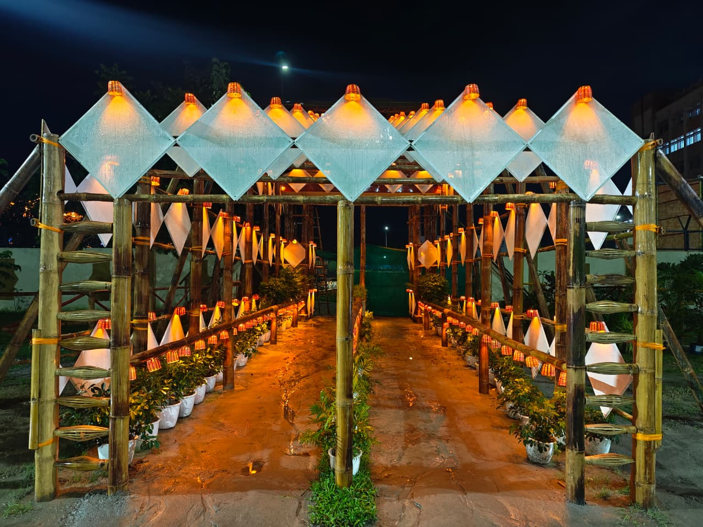
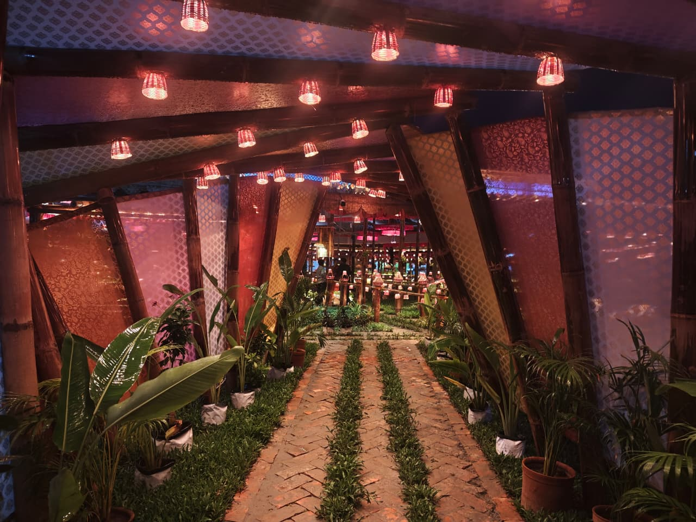
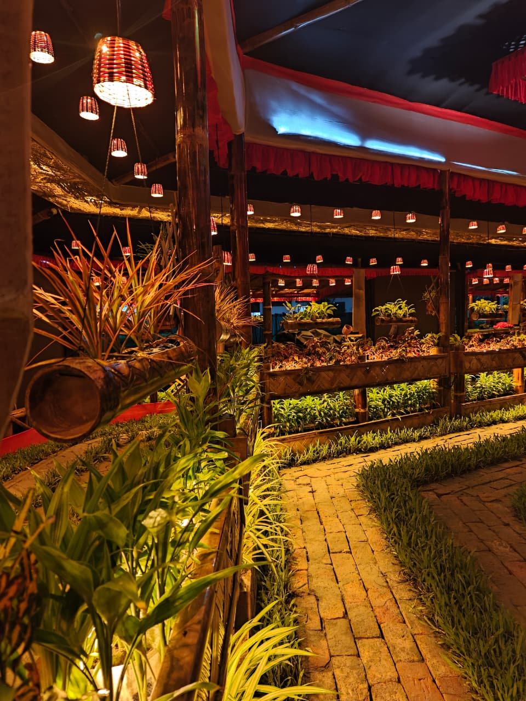
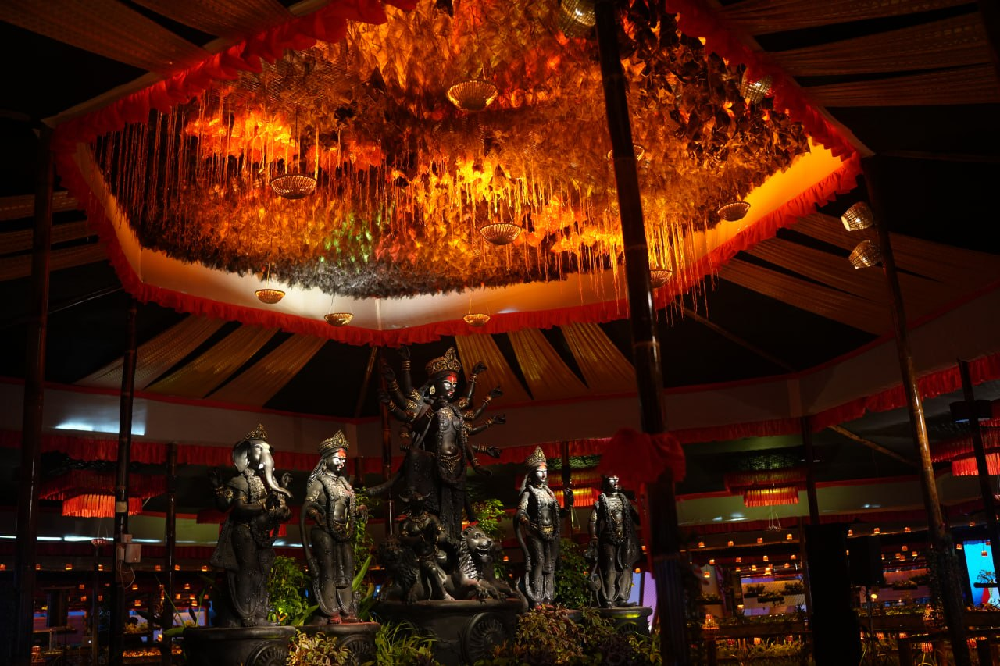
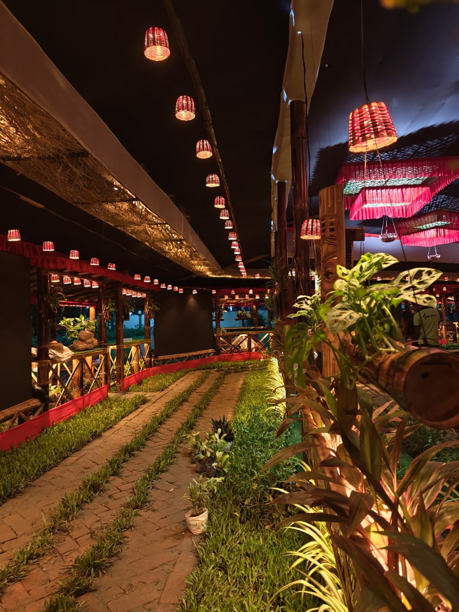
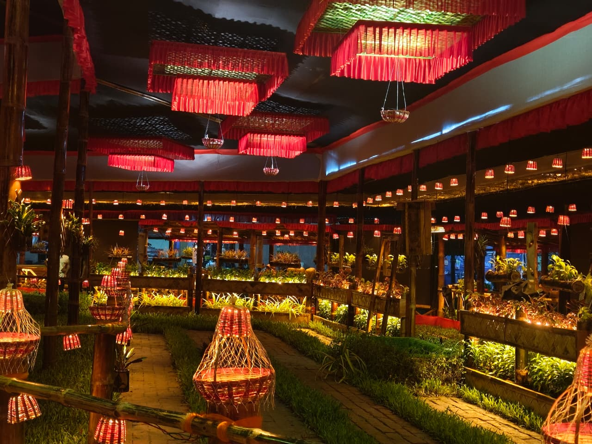
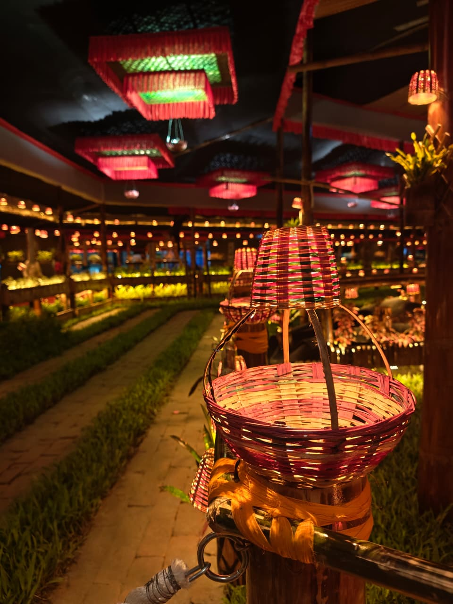
Durga Puja Mahotsav 2025, IIT Kharagpur Research Park. The organisers' record, not the 2026 pandal.
Where the money goes
Partner contributions fund the event and only the event: the pandal and its build, the karigars, the demonstration farm and its planting, the technology plots, the five days of programming, safety and crowd management, and the documentation.
We will show you the line items.
It is not CSR dressed up. It is sponsorship of a cultural event, and we would rather it sat in your brand budget where it belongs.
KarmYog's village farm programme, seeding integrated farms at ₹1 lakh each, is real and separately funded. No part of sponsorship goes into it, and none is being asked of you.
If you would like to support the village programme, it is a different conversation on a different day, and it carries no visibility.
What happens, and when
The title position must be settled before the design locks in August, because the design is where the name physically lives. Category and technology partnerships can be agreed later, but the good plots go first.
What we need from you
A small working group, the right files, and one visit to the ground.
One decision maker and one marketing contact. That is the whole working group.
Your logo files and brand guidelines. If you take a technology plot, your equipment and two people on site across the week.
Come and stand on the ground before you sign. There will be no weekly status call.
What we promise
The test is whether your finance director can check it.
In writing
Never claimed
You will be shown proposals this season that promise you all five. We would rather be the one your finance director can check.
Questions
Commercial first, then the organisations, the ground and the time involved.
Contact
Munshir Bheri Management / Fishermen's Committee
Near Sukantanagar and Salt Lake Sector V, East Kolkata Wetlands
Kolkata 700091, West Bengal
Forty minutes from Sector V.
Organised by KarmYog for the 21st Century Foundation
Organisation Partner: Bharatiya Krishak Samaj
16 to 20 October 2026
Nothing is sent from this page
Your browser writes a file called bks-pujo-sponsor-enquiry.json onto your own computer. Read it, then decide whether to email it to us. No server receives it, nobody is notified, and no position is held.